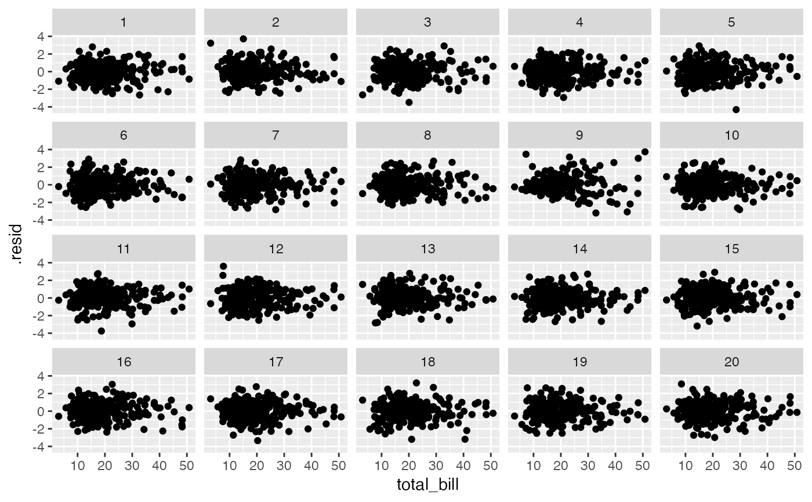

Null hypothesis: variable is linear combination of predictors
null_lm(f, method = "rotate", additional = FALSE, ...)model specification formula, as defined by lm
method for generating null residuals. Built in methods
'rotate', 'perm', 'pboot' and 'boot' are defined by resid_rotate,
resid_perm, resid_pboot and resid_boot
respectively
whether to compute additional measures: standardized residuals and leverage
other arguments passed onto method.
null_permute, null_dist
data(tips)
x <- lm(tip ~ total_bill, data = tips)
tips.reg <- data.frame(tips, .resid = residuals(x), .fitted = fitted(x))
library(ggplot2)
ggplot(lineup(null_lm(tip ~ total_bill, method = 'rotate'), tips.reg)) +
geom_point(aes(x = total_bill, y = .resid)) +
facet_wrap(~ .sample)
#> decrypt("wu0h F9H9 Bx cD2BHBDx NN")
